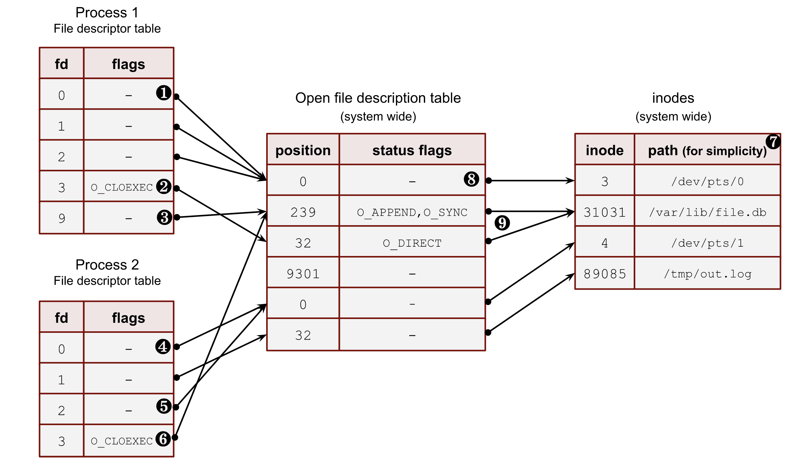

File descriptor and open file description #
Contents
stdin,stdoutandstderrProcfsand file descriptors- Sharing file descriptors between parent and child after
fork() - Duplication of file descriptors
execve()and file descriptors- Check if 2 file descriptors share the same open file description with
kcmp() - More ways to transfer file descriptors between processes:
pidfd_getfd()and Unix datagrams. - Shell redirections and file descriptors
First of all, I want to touch on the two fundamental concepts of working with files:
- file descriptor;
- open file description.
These two abstractions are crucial for understanding the internals of a process creation, communication, and data transition.
The first concept is a file descriptor or fd. It’s a positive integer number used by file system calls instead of a file path in order to make a variety of operations. Every process has its own file descriptor table (see Image 1 below). The main idea of a file descriptor is to decouple a file path (or, more correctly, an inode with minor and major device numbers) from a file object inside a process and the Linux kernel. This allows software developers to open the same file an arbitrary number of times for different purposes, with various flags (for instance: O_DIRECT, O_SYNC, O_APPEND, etc.), and at different offsets.
For example, a program wants to read from and write to one file in two separate places. In this case, it needs to open the file twice. Thus, two new file descriptors will refer to 2 different entries in the system-wide open file description table.
In its turn, the open file description table is a system-wide kernel abstraction. It stores the file open status flags (man 2 open) and the file positions (we can use man 2 lseek to change this position).
Frankly speaking, there is no such thing inside the Linux kernel where we can find the open file description table. To be more accurate, every created process in the kernel has a per-thread struct task_struct. This struct has a pointer to another structure called the files_struct, and that contains an array of pointers to a file struct. This final struct is actually what holds all file flags, a current position, and a lot of other information about the open file: such as its type, inode, device, etc. All such entries among all running threads are what we call the open file descriptor table.
So, now let’s see how we can create entities in these two tables. In order to create a new entry in the open file description table we need to open a file with one of the following syscalls: open, openat, create, open2 (man 2 open). These functions also add a corresponding entry in the file descriptor table of the calling process, build a reference between the open file description table entry and the file descriptor table, and return the lowest positive number not currently opened by the calling process. The latest statement is very important to remember and understand because it means that a fd number can be reused during the process life if it opens and closes files in an arbitrary order.
Linux kernel also provides an API to create copies of a file descriptor within a process. We will discuss why this technique can be helpful in a few minutes. For now, let’s just list them here: dup, dup2, dup3 (man 2 dup) and fcntl (man 2 fcntl) with F_DUPFD flag. All these syscalls create a new reference in the fd table of the process to the existing entry in the system-wide open file description table.
Let’s take a closer look at an example in the image below with a snapshot of a system state. The image shows us possible relations among all the above components.
❶ – The first three file descriptors (stdin, stdout and stderr) are special file descriptors. We will work with them later in this post. This example shows that all three point to a pseudoterminal (/dev/pts/0). These files don’t have positions due to their character device type. Thus process_1 and process_2 must be running under the terminal sessions. Please, note that the stdout of the process_2 (fd 1) points to the file on a disk /tmp/out.log. This is an example of shell redirection; we will discuss it later.
❷ – Some file descriptors can have per-process flags. Nowadays, there is only one such flag: close-on-exec (O_CLOEXEC). We will discuss it later in this section and answer why it’s so unique. But for now, you should understand that some file descriptors may have it for the same system-wide open file description table entries. For instance: process_1 and its fd 9 and process_2 and its fd 3.
❸ – Even though the file descriptor algorithm constantly reuses the file descriptors and allocates them sequentially from the lowest available, it doesn’t mean that there can be no gaps. For example, the fd 9 of the process_1 goes after fd 3. Some files, which used fd 4, 5, 6 and 7, could already be closed. Another way of achieving such a picture can be an explicit duplication of a file descriptor with dup2, dup3 or fcntl with F_DUPFD. Using these syscalls, we can specify the wanted file descriptor number. We will see later how it works in the chapter about the duplication of fds.
❹ – A process can have more than one file descriptor that points to the same entry in the open file descriptions. System calls dup, dup2, dup3 and fcntl with F_DUPFD help with that. The fd 0 and fd 2 of the process_2 refer to the same pseudo terminal entry.
❺ – Sometimes, one of the standard file descriptors might be pointed to a regular file (or pipe) and not a terminal. In this example, the stdout of the process_2 refers to a file on disk /tmp/out.txt.
❻ – It’s possible to point file descriptors from various processes to the same entry in the system-wide open file description table. This is usually achieved by a fork call and inheriting file descriptors from the parent to its child. But there are other ways, which we’ll see later in this chapter. These descriptors could also have different int fd numbers inside processes and different process flags (O_CLOEXEC). For instance, fd 9 of process_1 and fd 3 of process_2.
❼ – I put the file path here for simplicity. Instead, Linux kernel uses inode numbers, minor and major numbers of a device.
❽ – Often, for a shell, the 0,1 and 2 file descriptors are pointed to a pseudo-terminal.
❾ – Multiple open file descriptor entries can be linked with the same file on disk. The kernel allows us to open a file with different flags and at various offset positions.
stdin, stdout and stderr
#
The first three file descriptors of processes are treated differently by shells and other programs. These fds also have well-known aliases:
- 0 –
stdin - 1 –
stdout - 2 –
stderr
For a process started and running within a terminal session, these fds can be pointed to a pseudoterminal, a terminal, a file, a pipe, etc. For classical-UNIX-style daemons, they usually refer to a /dev/null device.
Later in this series, I’ll show how this works in shells and why we must be careful with these three fds when working with long-running background processes.
Procfs and file descriptors #
The kernel exposes all open file descriptors of a process with the virtual procfs file system. So in order to get information about the open files for the current shell process, we can use a shell variable $$ with its PID. For instance:
$ ls -l /proc/$$/fd/
lrwx------ 1 vagrant vagrant 64 Jul 9 21:15 0 -> /dev/pts/0
lrwx------ 1 vagrant vagrant 64 Jul 9 21:15 1 -> /dev/pts/0
lrwx------ 1 vagrant vagrant 64 Jul 9 21:15 2 -> /dev/pts/0
We can see only pseudoterminal /dev/pts/0 here. We will talk more about them a bit later.
Another useful directory in the procfs is the fdinfo folder under the process directory. It contains per file descriptor info. For example, for the stdin of the current shell process:
$ cat /proc/$$/fdinfo/0
pos: 0
flags: 02
mnt_id: 28
Keep in mind that the flags section here contains only the status flags (man 2 open). Let’s use it to write a tool to decode this flag mask to human-readable flags:
import os
import sys
pid = sys.argv[1]
fd = sys.argv[2]
with open(f"/proc/{pid}/fdinfo/{fd}", "r") as f:
flags = f.readlines()[1].split("\t")[1].strip()
print(f"Flags mask: {flags}")
flags = int(flags, 8)
# check status flags
if flags & os.O_RDONLY:
print("os.O_RDONLY is set")
if flags & os.O_WRONLY:
print("os.O_WRONLY is set")
if flags & os.O_RDWR:
print("os.O_RDWR is set")
if flags & os.O_APPEND:
print("os.O_APPEND is set")
if flags & os.O_DSYNC:
print("os.O_DSYNC is set")
if flags & os.O_RSYNC:
print("os.O_RSYNC is set")
if flags & os.O_SYNC:
print("os.O_SYNC is set")
if flags & os.O_NDELAY:
print("os.O_NDELAY is set")
if flags & os.O_NONBLOCK:
print("os.O_NONBLOCK is set")
if flags & os.O_ASYNC:
print("os.O_ASYNC is set")
if flags & os.O_DIRECT:
print("os.O_DIRECT is set")
if flags & os.O_NOATIME:
print("os.O_NOATIME is set")
if flags & os.O_PATH:
print("os.O_PATH is set")
# check close on exec
if flags & os.O_CLOEXEC:
print("os.O_CLOEXEC is set")
Out test program, which opens a file with some status flags:
import os
import sys
import time
file_path = sys.argv[1]
print(os.getpid())
fd = os.open(file_path, os.O_APPEND | os.O_RSYNC | os.O_NOATIME )
with os.fdopen(fd, "r+") as f:
print(f.fileno())
time.sleep(9999)
Let’s run it:
$ python3 ./open.py /tmp/123.txt
925
3
And run our tool:
$ python3 ./flags.py 925 3
Flags mask: 07112000
os.O_APPEND is set
os.O_DSYNC is set
os.O_RSYNC is set
os.O_SYNC is set
os.O_NOATIME is set
os.O_CLOEXEC is set
Some flags in the kernel are aliases to other flags. That’s why we see more flags here.
Another example is if we run our tool with a socket fd (I used nginx process):
$ sudo python3 ./flags.py 943 6
Flags mask: 02004002
os.O_RDWR is set
os.O_NDELAY is set
os.O_NONBLOCK is set
os.O_CLOEXEC is set
We can see that the socket is in nonblocking mode: O_NONBLOCK is set.
Sharing file descriptors between parent and child after fork()
#
Another important concept of file descriptors is how they behave with fork() (man 2 fork) and clone() (man 2 clone) system calls.
After a fork() or a clone() (without CLONE_FILES set) call, a child and a parent have an equal set of file descriptors, which refer to the same entries in the system-wide open file description table. It means they share identical file positions, status flags and process fd flags (O_CLOEXEC)
Let’s start with an example where 2 processes are not relatives. Both open the same file and get the same integer number for their fd. But because they both call open() independently, these two references to the open file description table will differ. After the file opening, the first example process makes a lseek() (man 2 lseek) at one position, and another program makes a lseek() call for the same file but at a different place. These actions don’t affect each other.
Code:
import time
import os
import sys
print(f"pid: {os.getpid()}")
with open("/var/tmp/file1.db", "r") as f:
print(f.fileno())
f.seek(int(sys.argv[1]))
time.sleep(99999)
Run them in 2 different terminals:
$ python3 ./file1.py 100 # <----------- lseek() to 100 bytes
pid: 826
3
$ python3 ./file1.py 200 # <----------- lseek() to 200 bytes
pid: 827
3
Now check procfs:
$ ls -l /proc/826/fd
lrwx------ 1 vagrant vagrant 64 Jul 9 21:18 0 -> /dev/pts/0
lrwx------ 1 vagrant vagrant 64 Jul 9 21:18 1 -> /dev/pts/0
lrwx------ 1 vagrant vagrant 64 Jul 9 21:18 2 -> /dev/pts/0
lr-x------ 1 vagrant vagrant 64 Jul 9 21:18 3 -> /var/tmp/file1.db <---------
$ ls -l /proc/827/fd
lrwx------ 1 vagrant vagrant 64 Jul 9 21:18 0 -> /dev/pts/1
lrwx------ 1 vagrant vagrant 64 Jul 9 21:18 1 -> /dev/pts/1
lrwx------ 1 vagrant vagrant 64 Jul 9 21:18 2 -> /dev/pts/1
lr-x------ 1 vagrant vagrant 64 Jul 9 21:18 3 -> /var/tmp/file1.db <---------
We have the same file path and the same file descriptor number. Now verify that the positions are different because we have unrelated open file descriptions:
$ cat /proc/826/fdinfo/3
pos: 100 <------------------------
flags: 02100000
mnt_id: 26
$ cat /proc/827/fdinfo/3
pos: 200 <------------------------
flags: 02100000
mnt_id: 26
Let’s now see how the file positions will behave after a fork() call between a parent process and its child. We open a file in a parent process, fork(), make lseek() in the child, and check whether the positions are the same or not.
import time
import os
import sys
with open("/var/tmp/file1.db", "r") as f:
print(f.fileno())
print(f"parent pid: {os.getpid()}")
pid = os.fork()
if not pid:
# child
print(f"child pid: {os.getpid()}")
f.seek(int(sys.argv[1]))
time.sleep(99999)
os.waitpid(pid, 0)
Run it:
$ python3 ./file2.py 100 # <----------- lseek() to 100 bytes
3
parent pid: 839
child pid: 840
Our procfs picture:
$ ls -l /proc/839/fd/
lrwx------ 1 vagrant vagrant 64 Jul 9 21:23 0 -> /dev/pts/0
lrwx------ 1 vagrant vagrant 64 Jul 9 21:23 1 -> /dev/pts/0
lrwx------ 1 vagrant vagrant 64 Jul 9 21:23 2 -> /dev/pts/0
lr-x------ 1 vagrant vagrant 64 Jul 9 21:23 3 -> /var/tmp/file1.db <---------
$ ls -l /proc/840/fd/
lrwx------ 1 vagrant vagrant 64 Jul 9 21:23 0 -> /dev/pts/0
lrwx------ 1 vagrant vagrant 64 Jul 9 21:23 1 -> /dev/pts/0
lrwx------ 1 vagrant vagrant 64 Jul 9 21:23 2 -> /dev/pts/0
lr-x------ 1 vagrant vagrant 64 Jul 9 21:23 3 -> /var/tmp/file1.db <---------
$ cat /proc/839/fdinfo/3
pos: 100 <--------- 100 bytes
flags: 02100000
mnt_id: 26
$ cat /proc/840/fdinfo/3
pos: 100 <--------- 100 bytes
flags: 02100000
mnt_id: 26
The primary purpose of such sharing is to protect files from being overwritten by children and its parent process. If all relatives start writing to a file simultaneously, the Linux kernel will sort this out and won’t lose any data because it’ll hold the lock and update the offset after each write. It’s worth mentioning that the data can appear in the file in a mixed way due to the CPU scheduler, arbitrary sizes of write buffers, and the amount of data to write.
If it’s not what you want, you should close all file descriptors after a successful fork(), including the three standard ones. This is basically how the classical daemons usually start. We will talk about them later in this series of posts.
Duplication of file descriptors #
We already know that we can open a new file in order to create a new file descriptor within the process. But it’s not always needed. Usually it’s handy to copy the existing fd to another one.
Let’s start with the existing kernel API. We have a bunch of syscalls to duplicate fd:
dup()– creates a new fd using the lowest unused int number. It usually follows theclose()syscall for the one of standard fd (stdin,stdout,stderr) in order to replace it.dup2()– does the same as above but has a second argument. Here we can specify the target fd. If the target fd already exists, thedup2()closes it first. Alldup2()operations are atomic.dup3()– does the same as thedup2()but has a third parameter, where theO_CLOEXECflag can be set.fcntl()withF_DUPFDflag behaves asdup2()with one exception: if the target fd exists, it uses the next one instead of closing it.
When dup(), dup2(), or fcntl() are used to create a duplicate of a file descriptor, the close-on-exec (O_CLOEXEC) flag is always reset for the duplicate fd.
We can in theory open the file twice with the O_APPEND flag and don’t use the duplication syscalls at all. In the following example O_APPEND flag preserves the strace tool from overwriting data in the results.log file by its concurrent writes from the stdout and stderr:
$ strace 1>>results.log 2>>results.log
where 1>> and 2>> are append shell redirections for stdout and stderr.
But if we use a shell pipe, the following example will only work with fd duplication logic. Pipes don’t have O_APPEND open flag, and they are much convenient for the redirection task (I’m covering the power of pipes later in the chapter 2 where you can find more justifications for the below technique):
$ strace 2>&1 | less
Let’s write an example that shows all the power of fd duplication:
import os
import time
print(f"{os.getpid()}")
fd1 = os.open("/var/tmp/file1.db", os.O_RDONLY, 777)
fd2 = os.dup(fd1)
fd3 = os.dup2(fd1, 999)
os.lseek(fd3, 100, 0)
time.sleep(9999)
We opened one file, duplicate it several times, change the file position and it’s changed for all of the fs:
$ ls -la /proc/2129/fd
lrwx------ 1 vagrant vagrant 64 Aug 6 19:52 0 -> /dev/pts/0
lrwx------ 1 vagrant vagrant 64 Aug 6 19:52 1 -> /dev/pts/0
lrwx------ 1 vagrant vagrant 64 Aug 6 19:52 2 -> /dev/pts/0
lr-x------ 1 vagrant vagrant 64 Aug 6 19:52 3 -> /var/tmp/file1.db
lr-x------ 1 vagrant vagrant 64 Aug 6 19:52 4 -> /var/tmp/file1.db
lr-x------ 1 vagrant vagrant 64 Aug 6 19:52 999 -> /var/tmp/file1.db
$ cat /proc/2129/fdinfo/999
pos: 100 <------------ position
flags: 0100000
mnt_id: 26
$ cat /proc/2129/fdinfo/3
pos: 100 <------------ position
flags: 02100000
mnt_id: 26
$ cat /proc/2129/fdinfo/4
pos: 100 <------------ position
flags: 02100000
mnt_id: 26
execve() and file descriptors
#
Now let’s talk what may happen with file descriptors during the execve() system call (man 2 execve).
Just to start, execve() is the only way the Linux kernel can start a new program. This syscall executes a binary file if the first argument is an ELF compiled file and has an executable bit set, or starts an interpreter with the content of the file if the argument has a hashbang (for example: #!/usr/bin/python) on the first line of the file and has an exec bit set.
After an execve() call a file offsets and flags are copied and shared if the close-on-exec (O_CLOEXEC) flag is not set.
Let’s prove it with an example. We need 2 files: sleep.py and exec.py. The second one will execute the first one.
#!/usr/bin/python3
import time
print("sleep")
time.sleep(99999)
Don’t forget to set an exec bit on it:
$ chmod +x ./sleep.py
The exec.py opens a file, duplicates it with dup2() syscall, clearing the close-on-exec (O_CLOEXEC) flag.
import os
with open("/var/tmp/file1.db", "r") as f:
print(f.fileno())
print(f"parent {os.getpid()}")
os.dup2(f.fileno(), 123)
pid = os.fork()
if not pid:
# child
print(f"child {os.getpid()}")
os.execve("./sleep.py", ["./sleep.py"], os.environ)
f.seek(234)
os.waitpid(-1, 0)
If we run it in the console, the output should be something like the following:
$ python3 ./exec.py
3
parent 6851
child 6852
sleep
If we check the procfs. First, we will not be able to see the fd 3 for the child. This happens because python, by default, opens all files with the O_CLOEXEC flag (but dup2 resets this flag for 123 fd) We can get this info by running out script under strace:
$ strace -s0 -f python3 ./exec.py
And in the output we can find the following:
openat(AT_FDCWD, "/var/tmp/file1.db", O_RDONLY|O_CLOEXEC) = 3
That’s why we used dup2(). It resets the O_CLOEXEC flag and allows us to check whether the fd sharing is established.
The parent process:
$ ls -l /proc/6851/fd/
lrwx------ 1 vagrant vagrant 64 Jul 11 20:07 0 -> /dev/pts/1
lrwx------ 1 vagrant vagrant 64 Jul 11 20:07 1 -> /dev/pts/1
lr-x------ 1 vagrant vagrant 64 Jul 11 20:07 123 -> /var/tmp/file1.db <---
lrwx------ 1 vagrant vagrant 64 Jul 11 20:07 2 -> /dev/pts/1
lr-x------ 1 vagrant vagrant 64 Jul 11 20:07 3 -> /var/tmp/file1.db <---
The child has only fd 123:
$ ls -l /proc/6852/fd/
lrwx------ 1 vagrant vagrant 64 Jul 11 20:07 0 -> /dev/pts/1
lrwx------ 1 vagrant vagrant 64 Jul 11 20:07 1 -> /dev/pts/1
lr-x------ 1 vagrant vagrant 64 Jul 11 20:07 123 -> /var/tmp/file1.db <----
lrwx------ 1 vagrant vagrant 64 Jul 11 20:07 2 -> /dev/pts/1
Check the positions in the parent’s fds:
$ cat /proc/6851/fdinfo/3
pos: 234 <-------------------
flags: 02100000
mnt_id: 26
$ cat /proc/6851/fdinfo/123
pos: 234 <-------------------
flags: 0100000
mnt_id: 26
And the child:
$ cat /proc/6852/fdinfo/123
pos: 234 <-------------------
flags: 0100000
mnt_id: 26
The reasonable question you may ask now is how we can protect ourselves from leaking file descriptors from a parent to children, keeping in mind that we usually execute a binary that we didn’t write. For instance, a shell starts programs like ls, ping, strace, etc.
Back in the past (before Linux 5.9), people iterated over all possible file descriptors and tried to close them. In order to find out the upper boundary, the ulimit limit for open files was used (RLIMIT_NOFILE).
Some people open the /proc/self/fd/ in their programs after fork() and close all fd from it.
But there is a more elegant way of doing this in the modern Linux kernels. It’s a close_range() syscall (man 2 close_range). It allows us to avoid heavy user space iterations and use a kernel help instead.
The fixed version:
...
pid = os.fork()
if not pid:
# child
print(f"child {os.getpid()}")
max_fd = os.sysconf("SC_OPEN_MAX") # <---- added
os.closerange(3, max_fd) # <---/
os.execve("./sleep.py", ["./sleep.py"], os.environ)
...
O_CLOEXEC
#
And finally 2 sentences about the O_CLOEXEC flag, and why we need it in the first place if we can close all unneeded file descriptors? The main issue is libraries. You should always open all files with it because it’s hard to track opened files from the main program.
Another crucial case is a situation when the exec() fails (due to permissiom issues, wrong path, etc), and we still need some previously opened files (for instance, to write logs). Usually, reopening them after such an error is quite hard.
As I showed earlier, for some modern programming language it’s a default behavior for their open file functions.
Check if 2 file descriptors share the same open file description with kcmp()
#
Let’s continue our journey with more unusual and elegant system calls.
You can use the kcmp() syscall (man 2 kcmp) to test whether 2 fds refer to the same open file description.
NOTE
We have this syscall instead of a full view of the open file description table due to security reasons. The kernel developers don’t feel good about exporting all this information to the user space https://lwn.net/Articles/845448/.
Let’s write a tool that we can use to identifies identical file descriptors for two processes. This system call is not widely used, so many programming languages don’t have a wrapper in their standard libraries. But it’s not a problem for us. First of all, we need to find a number of this syscall. For example, we can find it in the Linux kernel sources syscall_64.tbl:
...
311 64 process_vm_writev sys_process_vm_writev
312 common kcmp sys_kcmp
313 common finit_module sys_finit_module
...
The full code of our tool (if something is not clear, please read the man 2 kcmp):
package main
import (
"fmt"
"os"
"strconv"
"syscall"
)
const (
SYS_KCMP = 312
KCMP_FILE = 0
)
func kcmp_files(pid1, pid2, fd1, fd2 int) (int, error) {
r1, _, err := syscall.Syscall6(SYS_KCMP, uintptr(pid1), uintptr(pid2), KCMP_FILE, uintptr(fd1), uintptr(fd2), 0)
return int(r1), err
}
func main() {
var (
pid1, pid2, fd1, fd2 int
err error
)
pid1, err = strconv.Atoi(os.Args[1])
pid2, err = strconv.Atoi(os.Args[2])
fd1, err = strconv.Atoi(os.Args[3])
fd2, err = strconv.Atoi(os.Args[4])
if err != nil {
panic(err)
}
r1, err := kcmp_files(pid1, pid2, fd1, fd2)
fmt.Println(r1, err)
}
For the targets, we will use the exec.py program from the previous chapter:
$ go run ./kcmp.go 1957 1958 123 123
0 errno 0
$ go run ./kcmp.go 1957 1958 3 123
0 errno 0
$ go run ./kcmp.go 1957 1958 3 2
1 errno 0
$ go run ./kcmp.go 1957 1958 1 1
0 errno 0
As we can see, the parent and the child shared the fd 123, and the fd 3 in the parent is the copy of the 123 in the child. Also both stdout refer to the same shell pseudoterminal.
More ways to transfer file descriptors between processes: pidfd_getfd() and Unix datagrams.
#
So far, we’ve seen file descriptors sharing only from the parent to the child with the fork() call.
On some occasions, we want to send an fd to a target process or processes. For example, for a zero downtime program upgrades, where we want to preserve the file descriptor of a listening socket and transfer it to the new process with a new binary.
We have two options to do that in modern Linux kernels.
The first one is pretty standard and old. It works over a Unix socket. With a special UDP message, one process can pass an fd to another process. This, of course, works only locally (that’s why it’s a UNIX domain socket). The code for such transferring is massive and if you’re wondering how to write such a tool, please check out this detailed blog post.
The second option is quite new and allows a process to steal an fd from another process. I’m talking about the pidfd_getfd() system call (man 2 pidfd_getfd).
In order to leverage it, we need to open a process with another syscall: pidfd_open() (man 2 pidfd_open). Also, we would need a special set of ptrace permission: PTRACE_MODE_ATTACH_REALCREDS.
We can allow it system-wide in your test box, but please don’t do it in production. For production environments, please review the man 2 ptrace.
echo 0 | sudo tee /proc/sys/kernel/yama/ptrace_scope
Let’s run our old python example which opens a file with fd 3:
$ python3 ./file2.py 123
parent pid: 3155
3
child pid: 3156
And our stealing fd tool:
package main
import (
"fmt"
"os"
"strconv"
"syscall"
"time"
)
const (
sys_pidfd_open = 434 // from kernel table
sys_pidfd_getfd = 438
)
func pidfd_open(pid int) (int, error) {
r1, _, err := syscall.Syscall(sys_pidfd_open, uintptr(pid), 0, 0)
if err != 0 {
return -1, err
}
return int(r1), nil
}
func pidfd_getfd(pidfd, targetfd int) (int, error) {
r1, _, err := syscall.Syscall(sys_pidfd_getfd, uintptr(pidfd), uintptr(targetfd), 0)
if err != 0 {
return -1, err
}
return int(r1), nil
}
func main() {
var (
pid, fd int
err error
)
pid, err = strconv.Atoi(os.Args[1])
fd, err = strconv.Atoi(os.Args[2])
if err != nil {
panic(err)
}
fmt.Println("pid:", os.Getpid())
pidfd, err := pidfd_open(pid)
if err != nil {
panic(err)
}
newFd, err := pidfd_getfd(pidfd, fd)
if err != nil {
panic(err)
}
fmt.Println(newFd)
time.Sleep(time.Hour)
}
If we run it:
$ go run ./getfd.go 3155 3
pid: 4009
4
And check procfs:
$ ls -la /proc/4009/fd/
lrwx------ 1 vagrant vagrant 64 Jul 10 13:24 0 -> /dev/pts/2
lrwx------ 1 vagrant vagrant 64 Jul 10 13:24 1 -> /dev/pts/2
lrwx------ 1 vagrant vagrant 64 Jul 10 13:24 2 -> /dev/pts/2
lrwx------ 1 vagrant vagrant 64 Jul 10 13:24 3 -> 'anon_inode:[pidfd]'
lr-x------ 1 vagrant vagrant 64 Jul 10 13:24 4 -> /var/tmp/file1.db <--------------
lrwx------ 1 vagrant vagrant 64 Jul 10 13:24 5 -> 'anon_inode:[eventpoll]'
lr-x------ 1 vagrant vagrant 64 Jul 10 13:24 6 -> 'pipe:[43607]'
l-wx------ 1 vagrant vagrant 64 Jul 10 13:24 7 -> 'pipe:[43607]'
File is with the same position:
$ cat /proc/4009/fdinfo/4
pos: 123 <--------------
flags: 02100000
mnt_id: 26
By the way, if we check the file descriptor of the pidfd object, we can observe some additional info about the opened pid:
$ cat /proc/4009/fdinfo/3
pos: 0
flags: 02000002
mnt_id: 15
Pid: 3155 <-------------------
NSpid: 3155
Shell redirections and file descriptors #
Now it’s time to talk about file descriptors and shells. We start with some basics, but later in this chapter you’ll find several really nit examples which could significantly improve your shell experience and performance.
For all examples, I’ll use GNU Bash 5.1. But I’m sure, the same concerts and techniques are available in your favorite shell.
Let’s start with simple and well-known redirections.
Instead of stdin read, we can use a file:
$ cat < /tmp/foo
Some text
The same we can do for the stdout:
$ echo "123" > /tmp/foo # redirected stdout
$ cat /tmp/foo
123
>> appends to a file instead of overwriting it:
$ echo "123" >> /tmp/foo # append to a file
$ cat /tmp/foo
123
123
In order to write stderr to file, we need to specify the file descriptor number:
$ cat "123" 2> /tmp/foo # write stderr to a file
$ cat /tmp/foo
cat: 123: No such file or directory
We can use the same file for both stdout and stderr:
cat "123" > /tmp/foo 2>&1
All of the above internally opens a target file with the open() syscall and uses dup2() calls to overwrite the standard file descriptors with the fd of the file. For the latest one, the shell runs dup2() twice for the stdout() and stderr()
The general syntax for the redirection:
>fd > file_name>&fd >& fd
With bash we aren’t restricted by the standard fds and can open new ones. For instance to open an fd 10:
$ exec 10<> /tmp/foo
Check the procfs:
$ ls -la /proc/$$/fd
lrwx------ 1 vagrant vagrant 64 Jul 9 21:17 0 -> /dev/pts/2
lrwx------ 1 vagrant vagrant 64 Jul 9 21:17 1 -> /dev/pts/2
lrwx------ 1 vagrant vagrant 64 Jul 10 14:56 10 -> /tmp/foo <---------
lrwx------ 1 vagrant vagrant 64 Jul 9 21:17 2 -> /dev/pts/2
lrwx------ 1 vagrant vagrant 64 Jul 10 14:56 255 -> /dev/pts/2
If we run strace we can see how it works:
...
openat(T_FDCWD, "/tmp/foo", O_RDWR|O_CREAT, 0666) = 3 # open
dup2(3, 10) = 10 # duplicate
close(3) = 0 # close unneded initial fd
...
Now we can write there:
echo "123" >&10
And read from it:
$ cat <&10
123
And when we finish, we can close it:
$ exec 10<&-
Fun fact: if you close the stdin, you’ll lose your ssh connection:
$ exec 0<&-
This happens because your bash is a session leader and a controlling terminal process. When the controlling terminal closes its terminal, the kernel sends a SIGHUP signal to it, and the shell exits. We will talk about sessions, leaders and terminals later in next series of posts.
We also can use “-” (dash, minus) char instead of a file name for some tools. It means to read a file content from the stdin. For example, it may be really useful with diff:
$ echo "123" | diff -u /tmp/file1.txt -
--- /tmp/file1.txt 2022-07-10 21:42:02.256998049 +0000
+++ - 2022-07-10 21:42:15.733486844 +0000
@@ -1 +1 @@
-124
+123
Another advanced feature of the bash is a process substitution, which involves the duplication of file descriptors. Long story short, you can create tmp files with on demand and use them in other tools awaiting file parameters.
Process substitution uses /dev/fd/<n> files to send the results of the process(es) within parentheses to another process.
I like the following two examples. This approach helps improve my shell experience and saves me from creating temporary files. The first one is a diff example:
$ diff -u <(cat /tmp/file.1 | sort | grep "string") <(echo "string2")
--- /dev/fd/63 2022-07-10 21:53:39.960846984 +0000
+++ /dev/fd/62 2022-07-10 21:53:39.960846984 +0000
@@ -1 +1 @@
-string1
+string2
And the following one helps with strace and grep:
$ strace -s0 -e openat -o >(grep file1.db) python3 ./dup.py
2243
openat(AT_FDCWD, "/var/tmp/file1.db", O_RDONLY|O_CLOEXEC) = 3